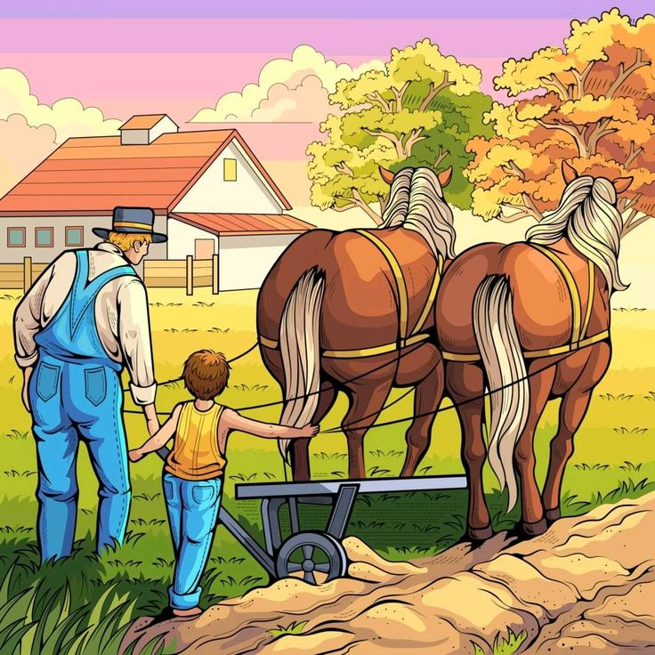
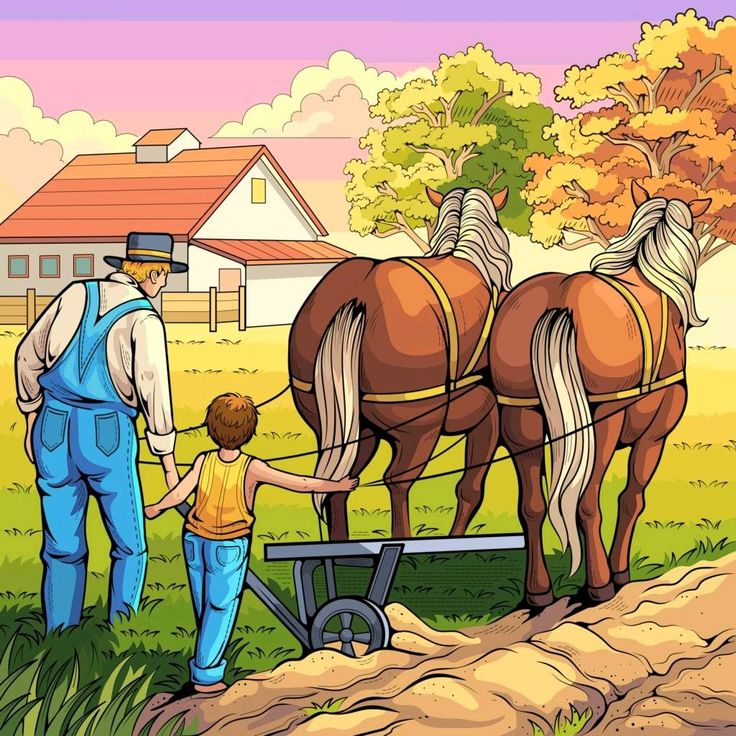

ℂ𝕠𝕟𝕖𝕩𝕒̃𝕠 𝕕𝕠 ℝ𝕦𝕣𝕒𝕝 𝕒𝕠 𝕌𝕣𝕓𝕒𝕟𝕠
𝑴𝒆𝒅𝒊𝒂𝒏𝒕𝒆 𝒐 𝒂𝒗𝒂𝒏𝒄̧𝒐 𝒕𝒆𝒄𝒏𝒐𝒍𝒐́𝒈𝒊𝒄𝒐 𝒂 𝒂𝒈𝒓𝒊𝒄𝒖𝒍𝒕𝒖𝒓𝒂 𝒑𝒂𝒔𝒔𝒐𝒖 𝒅𝒆 𝒆𝒔𝒕𝒂𝒓 𝒓𝒆𝒍𝒂𝒄𝒊𝒐𝒏𝒂𝒅𝒂 𝒖𝒏𝒊𝒄𝒂𝒎𝒆𝒏𝒕𝒆 𝒂 𝒕𝒂𝒓𝒆𝒇𝒂𝒔 𝒓𝒖𝒓𝒂𝒊𝒔 𝒑𝒓𝒐𝒅𝒖𝒛𝒊𝒅𝒂𝒔 𝒑𝒆𝒍𝒂𝒔 𝒇𝒂𝒎𝒊́𝒍𝒊𝒂𝒔 𝒄𝒂𝒎𝒑𝒆𝒔𝒕𝒓𝒆𝒔, 𝒆 𝒆𝒔𝒕𝒂́ 𝒍𝒊𝒈𝒂𝒅𝒂 𝒅𝒊𝒓𝒆𝒕𝒂𝒎𝒆𝒏𝒕𝒆 𝒂 𝒕𝒆𝒄𝒏𝒐𝒍𝒐𝒈𝒊𝒂, 𝒑𝒐𝒊𝒔, 𝒂𝒕𝒖𝒂𝒍𝒎𝒆𝒏𝒕𝒆 𝒅𝒆𝒗𝒊𝒅𝒐 𝒂𝒐 𝒅𝒆𝒔𝒆𝒏𝒗𝒐𝒍𝒗𝒊𝒎𝒆𝒏𝒕𝒐 𝒅𝒂 𝒎𝒐𝒅𝒆𝒓𝒏𝒊𝒛𝒂𝒄̧𝒂̃𝒐 𝒏𝒐 𝒎𝒆𝒊𝒐 𝒓𝒖𝒓𝒂𝒍, 𝒉𝒐𝒖𝒗𝒆 𝒖𝒎𝒂 𝒇𝒂𝒄𝒊𝒍𝒊𝒕𝒂𝒄̧𝒂̃𝒐 𝒏𝒂𝒔 𝒐𝒄𝒖𝒑𝒂𝒄̧𝒐𝒆̃𝒔 𝒐𝒑𝒆𝒓𝒂𝒅𝒂𝒔 𝒑𝒆𝒍𝒐 𝒉𝒐𝒎𝒆𝒎
 
